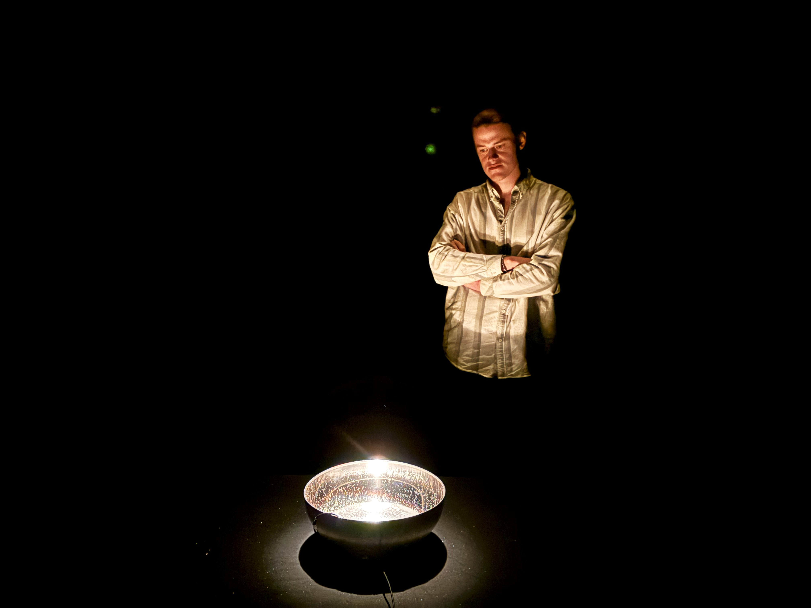
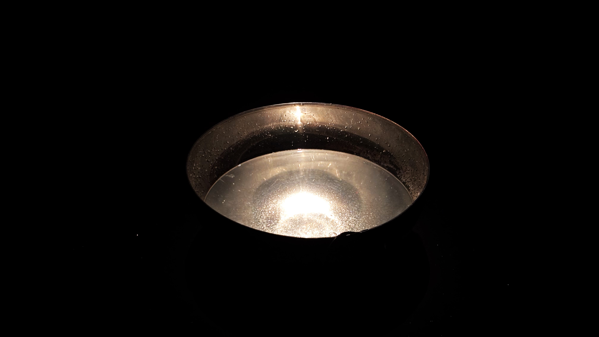
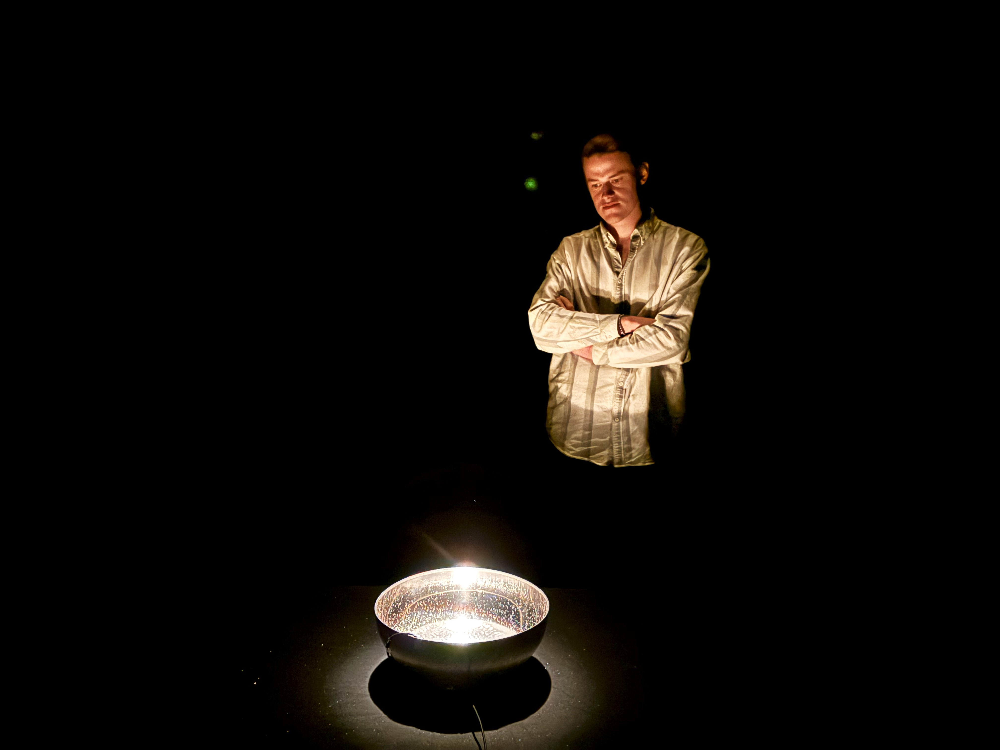
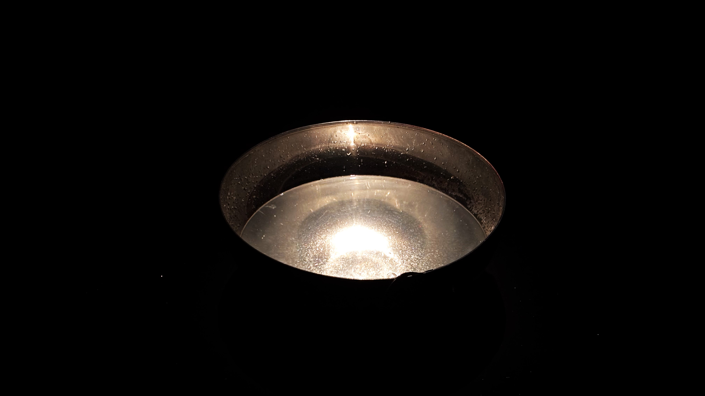

The Weight of Water
Instalation
 



INSTALATION
2025
Although a disputed fact, water is said to hold memory. This idea can be viewed both scientifically and abstractly and is the core concept of this installation. A droplet of water, or a single droplet of memory if you will, is released onto the underlying surface. This droplet of memory carries both visual and audio information. The sound is collected through a hydrophone and sustained within an acoustic feedback-loop. The visual part of the droplet’s memory is represented through ripples constructed by the lower frequencies of the feedback. With this combination, we are extending a fleeting moment in time, giving the droplet a prolonged lifespan, before it eventually, and inevitably, turns into memory again.
Instalation at Helena Sá e Costa theatre by:
Steinar Bolstad Skålid - Diogo Nóbrega - Susana Brichado